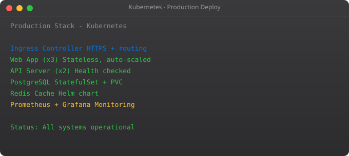

This final part brings everything together. We deploy a complete multi-service application using every concept from the series.
kubectl create namespace production
kubectl create namespace monitoring
helm install postgres bitnami/postgresql -n production
helm install redis bitnami/redis -n production
kubectl apply -f k8s/production/ -n production
helm install monitoring prometheus-community/kube-prometheus-stack -n monitoring
kubectl apply -f k8s/ingress.yamlBefore going live, verify: all pods passing health checks, resource limits set on every container, secrets not hardcoded, persistent storage provisioned, monitoring dashboards working, alerting rules configured, TLS certificates valid, namespaces separating environments, resource quotas preventing runaway consumption.
After mastering these fundamentals, explore GitOps with ArgoCD, service meshes with Istio, custom operators, and multi-cluster management. The key to getting good at Kubernetes is using it for real work — deploy your own projects, break things, and fix them. That debugging experience is irreplaceable.